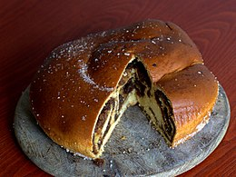

Gubana recipe

What is gubana?
Gubana is a typical dessert of the Natisone valleys (Udine), which
is prepared during periods of great celebration (Christmas, Easter)
or on special occasions ( such as weddings and village festivals)
, snail-shaped, with a diameter of about 20 cm, cooked in the oven,
made from leavened sweet dough, with a filling of walnuts, raisins,
pine nuts, sugar, grappa, grated rind of lemon.
Ingredients
- bread flour
- milk
- sugar
- 2 eggs
- butter
- salt
- raisins
- almonds
- walnuts
- marsala
- cinnamon
Steps
- Combine flour, milk, sugar and yeast
- Add eggs and butter and keep on mixing until the ingredients form a uniform dough.
- Mix and crush raisins, almonds, walnuts, cinnamon and marsala until you have a uniform paste.
- Roll the dough in a rectangular form, no higher than a centimeter.
- Spread the filling paste uniformly over the dough.
- Roll the dough twice: the first along the longest edge, the second time roll the
dough log on its own, snail like.
- Brush the egg over the dough and bake for one hour at 180°